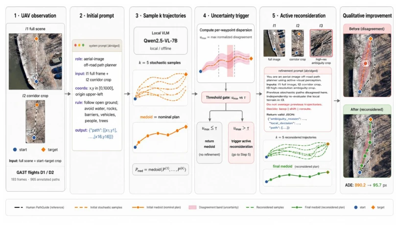
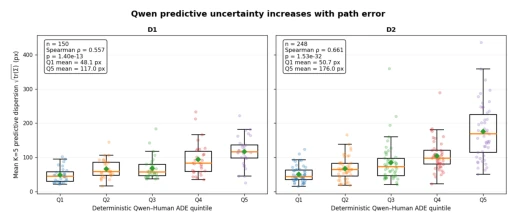
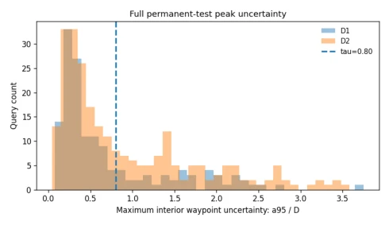
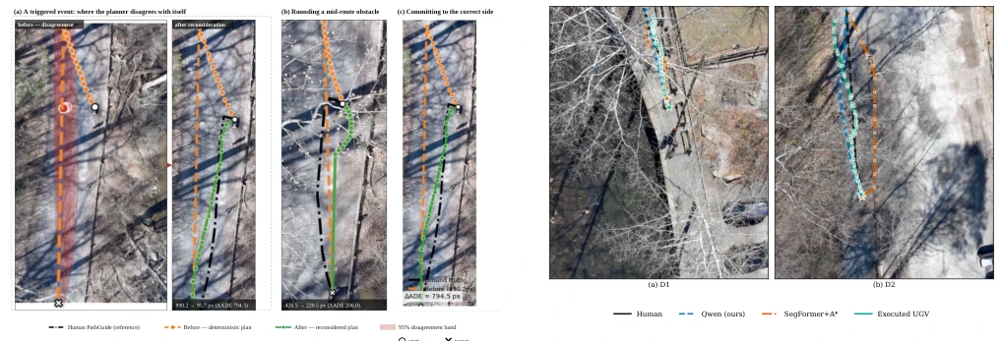
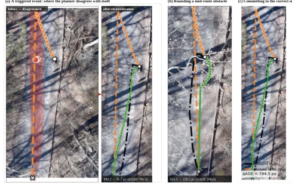

This paper adds a 'self-doubt' mechanism to VLM navigation, which is quite interesting. VLMs are typically black boxes that proceed without hesitation, but this UDAV approach checks for consensus through multiple sampling; if there is significant disagreement, it replans. Medoid-based path selection is more stable than single-point prediction, and uncertainty estimation can also trigger replanning. However, experiments only ran two drone flight sequences, without closed-loop control; how robust this 'adaptation' truly is depends on real-world deployment. Moreover, the threshold τ was not tuned on the validation set, which is somewhat esoteric. Overall, using sampling variance as an uncertainty signal is a smart move, saving the cost of training a separate uncertainty head, but generalization in complex terrain is questionable. It successfully transforms randomness from noise into a signal; although computational cost increased by 20%, it achieved a significant reduction in long-tail errors, effectively patching the reliability of VLM navigation.
In unstructured outdoor environments, UAV-guided UGV navigation faces significant challenges. Traditional methods such as cost map planning (A*) based on semantic segmentation [4], [14] rely on predefined categories and cost mappings, exhibiting poor generalization. Although VLMs can generate paths directly [6], [7], single deterministic predictions cannot reflect reliability. Existing work like LM-Nav [13] relies on pre-built maps and cannot cope with unknown terrain. UDAV aims to address the lack of confidence indication in VLM predictions, utilizing consistency from random sampling as an uncertainty signal to avoid blind execution in ambiguous terrain. Furthermore, VLMs lack explicit priors in spatial reasoning [12], leading to potentially infeasible paths, thus requiring a mechanism to evaluate the geometric consistency of predictions.
The overall process is divided into two stages: training and inference. First, Qwen2.5-VL-7B is fine-tuned on the GA3T dataset. During inference, the model generates K=5 random trajectories. The core innovations lie in two points: first, using Medoid (median point) instead of the mean point as the baseline path to ensure the path comes from the model's actual output; second, calculating the covariance matrix of internal waypoints and normalizing it to obtain an uncertainty metric. If the maximum uncertainty exceeds threshold τ, the second stage is triggered: prompting the model with "prediction disagreement" and optionally providing high-resolution local cropped images, regenerating K_ref=5 trajectories and taking the Medoid. The final path is either the initial Medoid or the replanned Medoid. This method requires no additional uncertainty model, utilizing the same set of sampling to complete planning and evaluation simultaneously. Prompt design distinguishes between initial planning and replanning, with the latter explicitly informing the model of previous uncertainty.

Fig. 1. Schematic of the proposed UDAV planner, with the initial planning and uncertainty-triggered refinement prompts shown in abridged form. The complete prompts used in the experiments are included in the released reproducibility package.
Tested on two flight sequences of the GA3T dataset, totaling 400 retained queries. Baselines include Deterministic VLM, K=5/10 Medoid, and SegFormer+A*. Metrics adopted include ADE, Chamfer, etc. Results show that the Deterministic VLM's ADE is 147.4px, while K=5 Medoid drops to 115.9px. UDAV (τ=0.6) further drops to 110.4px, a 25.1% reduction compared to deterministic planning. UDAV outperforms the K=10 baseline on P90/P95 errors, indicating the adaptive mechanism effectively suppresses long-tail errors. Ablation studies show that local high-resolution cropped images do not significantly improve the replanning effect. Additionally, prediction disagreement is positively correlated with error (Spearman ρ=0.557/0.661), validating the effectiveness of the uncertainty signal.

Fig. 2. Predictive disagreement is associated with trajectory error. Test cases are binned by trajectory-error quintile and plotted against K = 5 predictive dispersion. Dispersion increases across error groups in both flights (Spearman ρ = 0.557 on D1 and 0.661 on D2).

Fig. 3. Distribution of the maximum normalized interior-waypoint uncertainty umax over the D1 and D2 permanent test sets. At τ = 0.6, 174 of 400 queries (43.5%) trigger reconsideration.

Fig. 5. Planned trajectories against the path physically executed by the UGV. Two example scenes comparing the human PathGuide annotation, the Qwen planner, SegFormer+A∗, and the executed UGV trajectory recovered by registering consecutive UAV frames. (a) D1. (b) D2.

Fig. 4. Qualitative examples of uncertainty-triggered reconsideration. Stochastic trajectory disagreement identifies difficult regions in which an additional planning pass can modify the route toward the human-annotated reference.